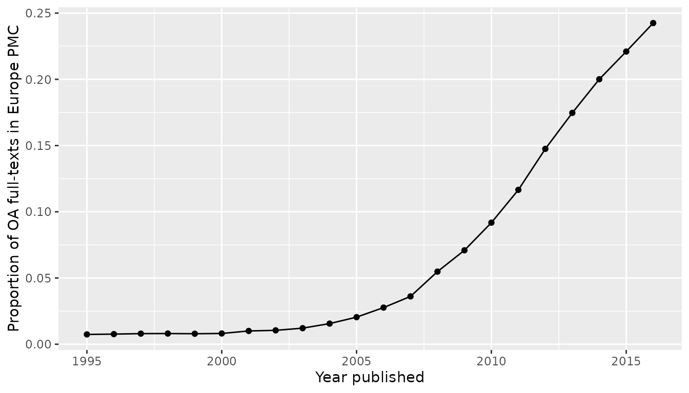
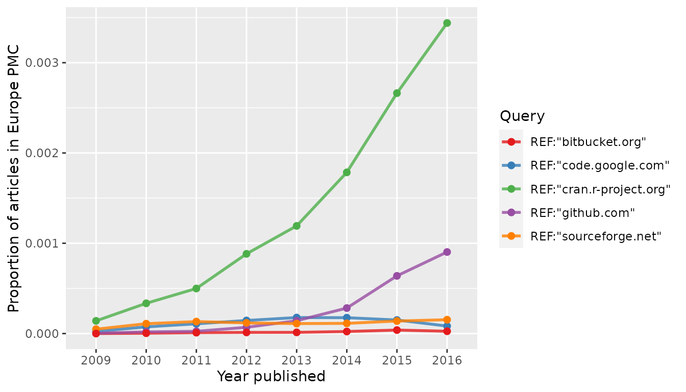

Making proper trend graphs
Najko Jahn
2021-07-09
Source:vignettes/evergreenreviewgraphs.Rmd
evergreenreviewgraphs.RmdTrend graphs in literature reviews show the development of concepts in scholarly communication. Some trend graphs, however, don’t acknowledge that the number of scholarly publications is growing each year, but simply display the absolute number of hits they have found for a given concept. Noam Ross called these misleading graphs evergreen review graphs because of their enduring popularity in review papers. Examples can be found on Twitter under the Hashtag #evergreenreviewgraph.
This vignette guides you how to make proper trend graphs when reviewing Europe PMC literature. In these graphs, the number of hits found is divided by the total number of records indexed in Europe PMC for a given search query.
Preparing proper review graphs with epmc_hits_trend()
We use epmc_hits_trend() function, which was firstly introduced in Maëlle Salmon’s blog post about “How not to make an evergreen review graph”1. The function takes a query in the Europe PMC search syntax2 and the period of years over which to perform the search as arguments, and returns a data-frame with year, total number of hits (all_hits) and number of hits for the query (query_hits).
library(europepmc)
europepmc::epmc_hits_trend(query = "aspirin", period = 2010:2016)
#> # A tibble: 7 x 3
#> year all_hits query_hits
#> <int> <dbl> <dbl>
#> 1 2010 851016 7219
#> 2 2011 904605 7887
#> 3 2012 945898 9053
#> 4 2013 1003836 10126
#> 5 2014 1055418 10893
#> 6 2015 1095829 11746
#> 7 2016 1116098 12095By default, synonym search is disabled and only Medline/PubMed index is searched.
Use Cases
Use Case: Growth of Open Access Literature
There is a growing interest in knowing the proportion of open access to scholarly literature. Europe PMC allows searching for open access content with the OPEN_ACCESS:Y parameter. At the moment, Europe PMC contains 3,653,451 open access full-texts. Let’s see how they are relatively distributed over the period 1995 - 2016.
tt_oa <- europepmc::epmc_hits_trend("OPEN_ACCESS:Y", period = 1995:2016, synonym = FALSE)
tt_oa
#> # A tibble: 22 x 3
#> year all_hits query_hits
#> <int> <dbl> <dbl>
#> 1 1995 449004 3337
#> 2 1996 458526 3508
#> 3 1997 456744 3664
#> 4 1998 474613 3836
#> 5 1999 493680 3917
#> 6 2000 532020 4328
#> 7 2001 545674 5479
#> 8 2002 561424 5894
#> 9 2003 588571 7148
#> 10 2004 628141 9794
#> # … with 12 more rows
# we use ggplot2 for plotting the graph
library(ggplot2)
ggplot(tt_oa, aes(year, query_hits / all_hits)) +
geom_point() +
geom_line() +
xlab("Year published") +
ylab("Proportion of OA full-texts in Europe PMC")
Be careful with the interpretation of the slower growth in the last years because there are several ways how open access content is added to Europe PMC including the digitalization of back issues.3
Use Case: Cited open source software in scholarly publications
Another nice use case for trend graphs is to study how code and software repositories are cited in scientific literature. In recent years, it has become a good practice not only to re-use openly available software, but also to cite them. The FORCE11 Software Citation Working Group states:
In general, we believe that software should be cited on the same basis as any other research product such as a paper or book; that is, authors should cite the appropriate set of software products just as they cite the appropriate set of papers. (doi:10.7717/peerj-cs.86)
So let’s see whether we can find evidence for this evolving practice by creating a proper review graph. As a start, we examine these four general purpose hosting services for version-controlled code:
and, of course, CRAN, the R archive network.
How to query Europe PMC?
We only want to search reference lists. Because Europe PMC does not index references for its complete collection, we use has_reflist:y to restrict our search to those publications with reference lists. These literature sections can be searched with the REF: parameter.
Let’s prepare the queries for links to the above mentioned code hosting services:
dvcs <- c("code.google.com", "github.com",
"sourceforge.net", "bitbucket.org", "cran.r-project.org")
# make queries including reference section
dvcs_query <- paste0('REF:"', dvcs, '"')and get publications for which Europe PMC gives access to reference lists for normalizing the review graph.
library(dplyr)
my_df <- purrr::map_df(dvcs_query, function(x) {
# get number of publications with indexed reference lists
refs_hits <-
europepmc::epmc_hits_trend("has_reflist:y", period = 2009:2016, synonym = FALSE)$query_hits
# get hit count querying for code repositories
europepmc::epmc_hits_trend(x, period = 2009:2016, synonym = FALSE) %>%
dplyr::mutate(query_id = x) %>%
dplyr::mutate(refs_hits = refs_hits) %>%
dplyr::select(year, all_hits, refs_hits, query_hits, query_id)
})
my_df
#> # A tibble: 40 x 5
#> year all_hits refs_hits query_hits query_id
#> <int> <dbl> <dbl> <dbl> <chr>
#> 1 2009 793062 555469 13 "REF:\"code.google.com\""
#> 2 2010 851016 540508 40 "REF:\"code.google.com\""
#> 3 2011 904605 603046 65 "REF:\"code.google.com\""
#> 4 2012 945898 635435 92 "REF:\"code.google.com\""
#> 5 2013 1003836 761497 135 "REF:\"code.google.com\""
#> 6 2014 1055418 797019 140 "REF:\"code.google.com\""
#> 7 2015 1095829 779518 117 "REF:\"code.google.com\""
#> 8 2016 1116098 782560 65 "REF:\"code.google.com\""
#> 9 2009 793062 555469 2 "REF:\"github.com\""
#> 10 2010 851016 540508 10 "REF:\"github.com\""
#> # … with 30 more rows
### total
hits_summary <- my_df %>%
group_by(query_id) %>%
summarise(all = sum(query_hits)) %>%
arrange(desc(all))
hits_summary
#> # A tibble: 5 x 2
#> query_id all
#> <chr> <dbl>
#> 1 "REF:\"cran.r-project.org\"" 8220
#> 2 "REF:\"github.com\"" 1609
#> 3 "REF:\"code.google.com\"" 667
#> 4 "REF:\"sourceforge.net\"" 643
#> 5 "REF:\"bitbucket.org\"" 94The proportion of papers where Europe PMC was able to make the cited literature available was 70 for the period 2009-2016. There also seems to be a time-lag between indexing reference lists because the absolute number of publication was decreasing over the years. This is presumably because Europe PMC also includes delayed open access content, i.e. content which is not added immediately with the original publication.4
Now, let’s make a proper review graph normalizing our query results with the number of publications with indexed references.
library(ggplot2)
ggplot(my_df, aes(factor(year), query_hits / refs_hits, group = query_id,
color = query_id)) +
geom_line(size = 1, alpha = 0.8) +
geom_point(size = 2) +
scale_color_brewer(name = "Query", palette = "Set1")+
xlab("Year published") +
ylab("Proportion of articles in Europe PMC")
Discussion and Conclusion
Although this figure illustrates the relative popularity of citing code hosted by CRAN and GitHub in recent years, there are some limits that needs to be discussed. As said before, Europe PMC does not extract reference lists from every indexed publication. It furthermore remains open whether and to what extent software is cited outside the reference section, i.e. as footnote or in the acknowledgements.
Another problem of our query approach is that we did not consider that DOIs can also be used to cite software, a best-practice implemented by Zenodo and GitHub or the The Journal of Open Source Software.
Lastly, it actually remains unclear, which and what kind of software is cited how often. We could also not control if authors just cited the homepages and not a particular source code repository. One paper can also cite more than one code repository, which is also not represented in the trend graph.
To conclude, a proper trend graph on the extent of software citation can only be the start for a more sophisticated approach that mines links to software repositories from scientific literature and fetches metadata about these code repositories from the hosting facilities.
Conclusion
This vignette presented first steps on how to make trend graphs with europepmc. As our use-cases suggest, please carefully consider how you queried Europe PMC in the interpretation of your graph. Although trend graphs are a nice way to illustrate the development of certain concepts in scientific literature or recent trends in scholarly communication, they must be put in context in order to become meaningful.
Europe PMC Search Syntax: https://europepmc.org/Help#mostofsearch↩
See section “Content Growth” in: McEntyre JR, Ananiadou S, Andrews S, et al. UKPMC: a full text article resource for the life sciences. Nucleic Acids Research. 2011;39(Database):D58–D65. https://doi.org/10.1093/nar/gkq1063.↩
Ebd.↩